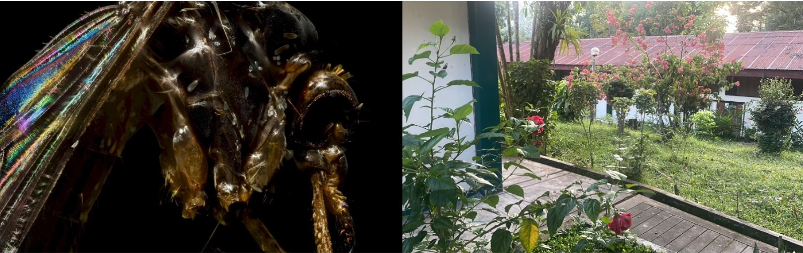

Mosquitoes, Medicine and Metagenomics - Course Overview

This two-week intensive course introduces mosquitoes as vectors of clinical disease through integrated field, laboratory, and bioinformatics training.
In the first week, participants conduct fieldwork in the Peruvian Amazon, learning mosquito sampling, habitat assessment, and specimen preservation while exploring the ecology and epidemiology of key disease vectors.
The second week takes place in the UK and includes lectures, laboratory sessions, and computational workshops. Participants gain practical experience in mosquito taxonomy, MALDI-TOF mass spectrometry, DNA sequencing, and bioinformatics for species identification and phylogenetic analysis.
The course provides multidisciplinary skills for studying mosquito diversity and vector-borne diseases in both research and public health contexts.